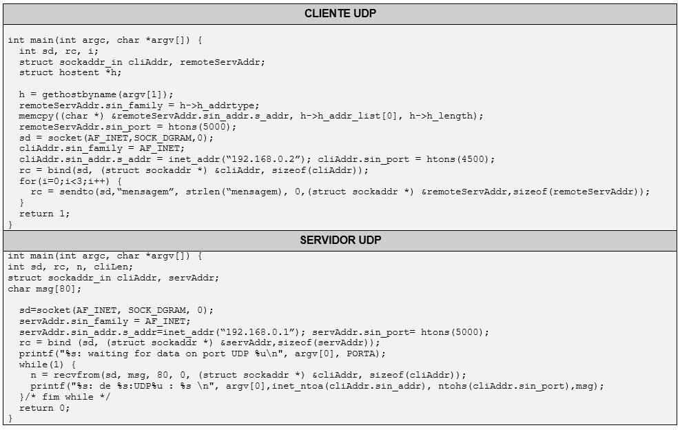
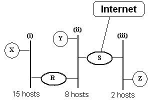
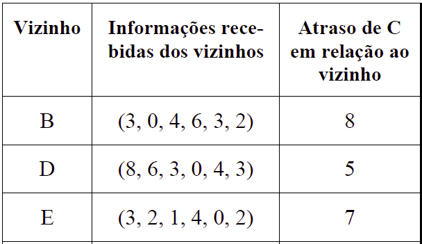
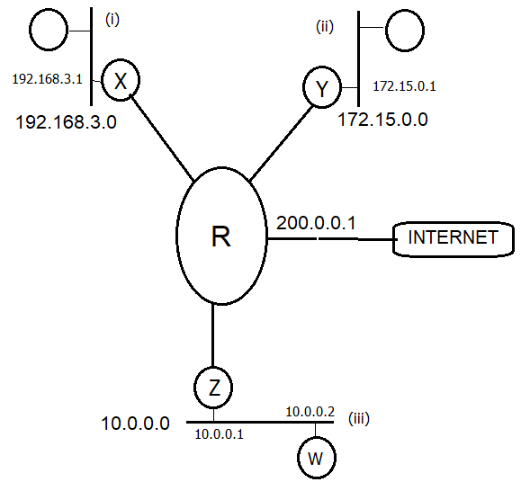
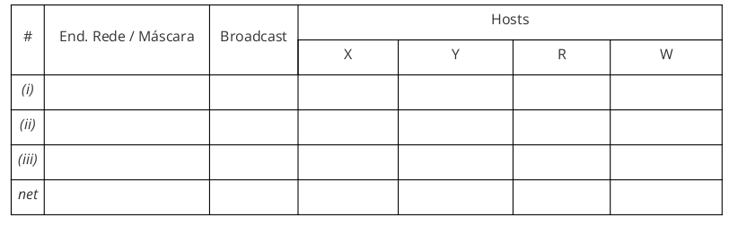

Com base no código a seguir, analise as questões apresentadas e marque a alternativa CORRETA:

Para que os dois clientes possam acessar o servidor simultaneamente, será necessário que o servidor instancie dois processos filhos para atender essas conexões. Do contrário, um dos clientes ficará aguardando até que o outro termine o diálogo iniciado.
Para viabilizar código full-duplex nesse código entre o servidor e dois ou mais clientes, uma das modificações possíveis no código do servidor, seria o uso da system call select() necessariamente associado a um mecanismo de instanciação do processo servidor (com uso de fork ou criação de threads filha) para atender cada um dos clientes que solicitou a conexão.
Se alterássemos o código do cliente retirando tanto o preenchimento da struct cliAddr o código apresentado continuaria funcionando
Em questão de minutos, uma onda gigantesca de acessos tirou do ar o Yahoo!. O método usado no ataque pode ser entendido por meio de uma analogia. É como se você desse tanto trabalho para uma pessoa fazer que ela pararia tudo o que estivesse fazendo para ficar apenas ‘anotando os seus pedidos, sem prestar atenção a mais ninguém’.
De acordo com o texto acima, é correto afirmar que o site do Yahoo! sofreu uma ataque que afetou o seu serviço de:
Escolha uma opção:
Analise as questões e marque a alternativa CORRETA:

pode ser instalado no host S.
Folha de São Paulo - 14/02/2008 - 11h33 Petrobras confirma furto de informações sigilosas
“A Petrobras confirmou nesta quinta-feira que dados sobre pesquisas sísmicas, que podem incluir a descoberta de petróleo e gás, foram furtados de um contêiner da empresa. Segundo a estatal, as informações eram sigilosas e relevantes. A Petrobras informou apenas que o furto foi feito de uma empresa terceirizada prestadora de serviços, mas não citou nomes. Segundo fontes ouvidas pela Folha Online, o contêiner era transportado pela norte-americana Halliburton.
Segundo a Petrobras, o furto ocorreu no início deste mês e a investigação está sob sigilo. Uma missão especial da Polícia Federal no Rio, em conexão direta com o comando da PF em Brasília, estaria no caso.
Na ocasião do crime, o contêiner da Halliburton se dirigia a Macaé (RJ), rumo à base de operações da estatal na Bacia de Campos, transportando equipamentos, quando ocorreu o furto dos dados, que estariam em um disco rígido e computadores portáteis.
A estatal não informou detalhes sobre o conteúdo dos dados roubados, nem se continham números sobre o megacampo de Tupi, na Bacia de Santos. A Petrobras também evitou comentar detalhes do furto, mas disse que possui cópias das informações.”
De acordo com o texto acima, marque a opção correta.
Escolha uma opção:
Considere a configuração de rede a seguir, considerando a quantidade de equipamentos assinalada na figura para cada segmento de rede:
Assumindo um endereço de rede classe C que deve ser utilizado para endereçar todos os hosts dessa rede, analise os itens apresentados a seguir e marque a resposta correta:
Analise as afirmativas abaixo e, em seguida, marque a alternativa correta.
Pacotes IP possuem área de dados e de payload variável, podendo o conjunto todo chegar até o limite de 16K.
Numa rede IP, se um host A enviar um pacote IP para um host B, esse pacote terá o campo de CheckSum recalculado por cada roteador intermediário por onde o pacote passar, mesmo que a área de dados do pacote não tenha sido alterada ao longo do caminho.
Um determinado host que possua uma interface de rede configurada com endereço 127.0.0.1 pode ser acessado (por telnet ou pacotes ICMP) por um outro host (computador remoto), com IP 127.0.0.2. Isso ocorre assumindo que a tabela de rotas está correta e ambos estão utilizando o mesmo endereço Classe A.
Apenas a alternativa II) está correta
As alternativas I) e II) estão corretas
As alternativas II) e III) estão corretas
As alternativas I) e III) estão corretas
Apenas a alternativa III) está correta
Analise as afirmações abaixo e, a seguir, marque a alternativa correta
O bit URG é suficiente para garantir o envio de dados urgentes entre entidades TCP
No TCP/IP, a API-Socket pode ser considerada uma forma de facilitar o acesso às funcionalidades dos protocolos da camada de transporte (TCP e UDP)
O segmento TCP tem cabeçalho de tamanho variável e payload de tamanho fixo
Apenas III) é falsa
Apenas II) e III) são falsas
Apenas II) é falsa
Apenas I) e III) são falsas
Apenas I) é falsa
Sobre criptografia, marque a alternativa correta:
Escolha uma opção:
Explique como funcionam os protocolos IMAP, POP e SMTP para o serviço de e-mails. Na explicação, descrever a relação entre esses protocolos, caso exista
Sobre a camada de transporte, analise as afirmações abaixo e escolha a alternativa CORRETA.
A desconexão UDP é assimétrica, ou seja, ocorre de modo que basta apenas um dos lados se desconectar, para que a desconexão seja garantida
No UDP, uma solução para envio rápido de dados entre as partes comunicantes com uso de algoritmos como a Solução de Clark e o Algoritmo de Nagle
Um dos problemas da camada de transporte é que ela não consegue associar várias conexões de transporte numa única conexão de rede e nem fazer uma única conexão de transporte em várias conexões de rede.
Sobre a camada de transporte, analise as afirmações abaixo e escolha a alternativa CORRETA.
O TCP usa a medida de RTT (Round Trip Time) para computar os timeouts de uma conexão. Esse mecanismo ocorre, porque o tempo de espera de reconhecimentos é variável ao longo de uma conexão
O TCP possui mecanismos para reserva de buffers no lado receptor da conexão, a fim de viabilizar o envio de segmentos da janela deslizante
No TCP, o envio de um único byte de dados (1 caractere) implica num overhead de 40 bytes de cabeçalho, considerando os cabeçalhos TCP e IP.
Considere a seguinte topologia, cujos equipamentos são atualizados por algoritmos de roteamento dinâmico:

Suponha que tais equipamentos estejam configurados com o protocolo RIP (distance vector) e que, num determinado momento, os seguintes vetores chegaram ao roteador C:

Com base nessas informações, responda a alternativa correta em relação à nova tabela de rotas do equipamento C (contendo os novos atrasos em relação aos roteadores):
De acordo com as características do algoritmo DES, analise as afirmações abaixo e assinale a opção correta.
As tabelas de permutação (P-boxes) são utilizadas para se fazer transposições entre os bits de um bloco, onde algumas delas são voltadas para expansão e outras utilizadas para se fazer contração.
Apesar da chave ser 64 bits, apenas 56 deles são utilizados e ela não sofre mudanças durante todo o processo de encriptação.
Em cada uma das 16 rodadas do algoritmo, a chave sofre uma adição de 1 ou 2 bits, dependendo da rodada.
Escolha uma opção:
Podemos dizer que a integridade está comprometida na seguinte situação:
Escolha uma opção:
Considere um grupo de N pessoas que se comunicam entre si usando Criptografia simétrica. Todas as comunicações entre quaisquer duas pessoas do grupo também são visíveis para as demais. Nenhuma outra pessoa fora deste grupo pode decriptar as mensagens trocadas. Com base nisto, analise as afirmações abaixo e marque a alternativa correta.
Escolha uma opção:
Marcação de caractere, uso de tinta invisível, perfurações, fita corretiva de máquina de escrever, entre outras técnicas caracterizam:
Escolha uma opção:
Analise as afirmações abaixo e marque a alternativa correta.
Apenas I) e II) estão corretas
Apenas II) está correta
Apenas I) e III) estão corretas
Apenas II) e III) estão corretas
Apenas I) está correta
Analise a configuração de rede a seguir, distribua os endereços e mostre as tabelas de rota dos equipamentos X, Y, R e W, de modo que haja conectividade (a nível de camada IP entre todos esses equipamentos e também com a Internet). Considerar ainda, que as conexões de R com os roteadores X, Y e Z, devem ser resolvidas com desperdício mínimo de endereços, da faixa 192.168.100.0 (usar máscara de sub- rede nesses enlaces).

Na resposta, apresentar a tabela abaixo preenchida com endereços de rede, máscara e broadcast, além das rotas de todos os equipamentos das redes identificadas, de tal forma que essas máquinas consigam visualizar todas as demais (do ponto de vista da camada IP) e consigam acessar a Internet. Nesse caso supor que o IP de R para Internet (linha net da tabela) é 200.0.0.1. A resposta deve ser feita nos moldes da tabela a seguir:

Um aluno entra no computador do laboratório e digita o seguinte endereço no browser: http://ohio.infoway.vista.edu/chamex.html. Explique como o servidor DNS do laboratório consegue descobrir o endereço IP da máquina que contém o arquivo chamex.html. Na resposta, apontar os hosts DNS envolvidos e explicar passo a passo como ocorre a resolução de endereços nesse caso.